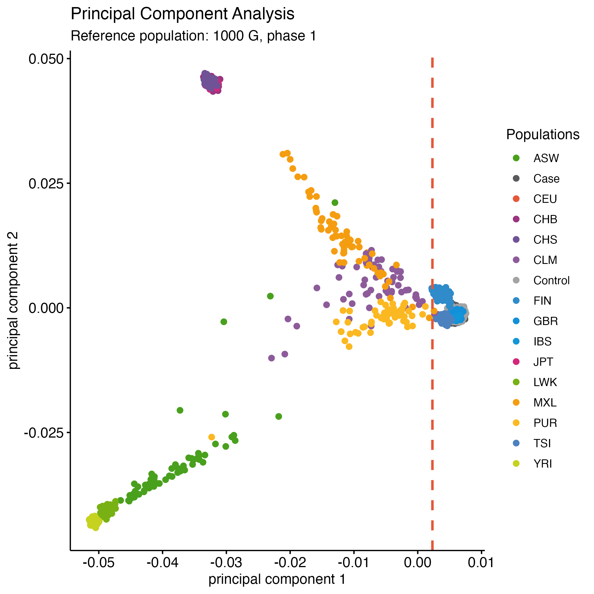

We should also inspect the allele frequencies. Note that by default PLINK (whether v0.7, v1.9, or v2.0) stores the alleles as minor (A1) and major (A2), and therefore --mafalways calculates the frequency of the minor allele (A1).
R
ggpubr::gghistogram(wtccc1_FRQ, x ="MAF", add ="mean", add.params =list(color ="#595A5C", linetype ="dashed", size =1), rug =TRUE, color ="#1290D9", fill ="#1290D9", xlab ="minor allele frequency")+ggplot2::geom_vline(xintercept =0.05, linetype ="dashed", color ="#E55738", size =1)ggplot2::ggsave("wtccc1/wtccc1-freq.png", plot =ggplot2::last_plot(), width =7, height =5, units ="in")
Question: What do you notice in the ‘per sample call rate’ graph? Can you think of a reason why this is? And how would you deal with this?
Lastly, we must inspect the per SNP call rate; we need to know if there are SNPs that have no data for many samples. We will want to identify such SNPs and exclude these.
R
ggpubr::gghistogram(wtccc1_LMISS, x ="callrate", add ="mean", add.params =list(color ="#595A5C", linetype ="dashed", size =1), rug =TRUE, bins =50, color ="#1290D9", fill ="#1290D9", xlab ="per SNP call rate")+ggplot2::geom_vline(xintercept =0.95, linetype ="dashed", color ="#E55738", size =1)ggplot2::ggsave("wtccc1/wtccc1-snp-call-rate.png", plot =ggplot2::last_plot(), width =7, height =5, units ="in")
Question: Do you have any thoughts on that? Do you agree with the filters I set below? How would you do it differently and why?
13.2 Ancestral background
If these individuals are all from the United Kingdom, we are certain there will be admixture from other populations given UK’s history. Let’s project the WTCCC1 data on 1000G phase 1 populations.
We will face the same issue as before with our dummy dataset with respect to EIGENSOFT. So I created the data for you to skip to the Plotting PCA section immediately. Regardless, in the Preparing PCA and Running PCA sections I show you how to get there.
If all is peachy, you were able to run the PCA for the WTCCC1 data against 1000G phase 1. Using --pca in plink we have calculated principal components (PCs) and we can now start plotting them. Let’s create a scatter diagram of the first two principal components just like we did with the dummy data.
And we should visualize the PCA results: are these individuals really all from European (UK) ancestry?
# Rename some names(PCA_eigenval)[names(PCA_eigenval)=="V1"]<-"Eigenvalue"names(PCA_eigenvec)[names(PCA_eigenvec)=="V1"]<-"FID"names(PCA_eigenvec)[names(PCA_eigenvec)=="V2"]<-"IID"names(PCA_eigenvec)[names(PCA_eigenvec)=="V3"]<-"PC1"names(PCA_eigenvec)[names(PCA_eigenvec)=="V4"]<-"PC2"names(PCA_eigenvec)[names(PCA_eigenvec)=="V5"]<-"PC3"names(PCA_eigenvec)[names(PCA_eigenvec)=="V6"]<-"PC4"names(PCA_eigenvec)[names(PCA_eigenvec)=="V7"]<-"PC5"names(PCA_eigenvec)[names(PCA_eigenvec)=="V8"]<-"PC6"names(PCA_eigenvec)[names(PCA_eigenvec)=="V9"]<-"PC7"names(PCA_eigenvec)[names(PCA_eigenvec)=="V10"]<-"PC8"names(PCA_eigenvec)[names(PCA_eigenvec)=="V11"]<-"PC9"names(PCA_eigenvec)[names(PCA_eigenvec)=="V12"]<-"PC10"names(PCA_eigenvec)[names(PCA_eigenvec)=="V13"]<-"PC11"names(PCA_eigenvec)[names(PCA_eigenvec)=="V14"]<-"PC12"names(PCA_eigenvec)[names(PCA_eigenvec)=="V15"]<-"PC13"names(PCA_eigenvec)[names(PCA_eigenvec)=="V16"]<-"PC14"names(PCA_eigenvec)[names(PCA_eigenvec)=="V17"]<-"PC15"names(PCA_eigenvec)[names(PCA_eigenvec)=="V18"]<-"PC16"names(PCA_eigenvec)[names(PCA_eigenvec)=="V19"]<-"PC17"names(PCA_eigenvec)[names(PCA_eigenvec)=="V20"]<-"PC18"names(PCA_eigenvec)[names(PCA_eigenvec)=="V21"]<-"PC19"names(PCA_eigenvec)[names(PCA_eigenvec)=="V22"]<-"PC20"names(wtccc1_pop)[names(wtccc1_pop)=="V1"]<-"Family_ID"names(wtccc1_pop)[names(wtccc1_pop)=="V2"]<-"Individual_ID"names(wtccc1_pop)[names(wtccc1_pop)=="V5"]<-"Gender"names(wtccc1_pop)[names(wtccc1_pop)=="V6"]<-"Phenotype"wtccc1_pop$V3<-NULLwtccc1_pop$V4<-NULLwtccc1_pop$Population<-wtccc1_pop$Phenotypewtccc1_pop$Population[wtccc1_pop$Population==2]<-"Case"wtccc1_pop$Population[wtccc1_pop$Population==1]<-"Control"
R
# we subset the data we needref_pop<-subset(ref_pop_raw, select =c("Family_ID", "Individual_ID", "Gender", "Phenotype", "Population"))rm(ref_pop_raw)# we combine the reference and dummy informationref_wtccc1_pop<-rbind(wtccc1_pop, ref_pop)
# Population Description Super population Code Counts# ASW African Ancestry in Southwest US AFR 4 #49A01D# CEU Utah residents with Northern and Western European ancestry EUR 7 #E55738# CHB Han Chinese in Bejing, China EAS 8 #9A3480# CHS Southern Han Chinese, China EAS 9 #705296# CLM Colombian in Medellin, Colombia MR 10 #8D5B9A# FIN Finnish in Finland EUR 12 #2F8BC9# GBR British in England and Scotland EUR 13 #1290D9# IBS Iberian populations in Spain EUR 16 #1396D8# JPT Japanese in Tokyo, Japan EAS 18 #D5267B# LWK Luhya in Webuye, Kenya AFR 20 #78B113# MXL Mexican Ancestry in Los Angeles, California AMR 22 #F59D10# PUR Puerto Rican in Puerto Rico AMR 25 #FBB820# TSI Toscani in Italy EUR 27 #4C81BF# YRI Yoruba in Ibadan, Nigeria AFR 28 #C5D220PCA_1kGplot<-ggpubr::ggscatter(PCA_1kG, x ="PC1", y ="PC2", color ="Population", palette =c("#49A01D", "#595A5C", "#E55738", "#9A3480", "#705296", "#8D5B9A", "#A2A3A4", "#2F8BC9", "#1290D9", "#1396D8", "#D5267B", "#78B113", "#F59D10", "#FBB820", "#4C81BF", "#C5D220"), xlab ="principal component 1", ylab ="principal component 2")+ggplot2::geom_vline(xintercept =0.0023, linetype ="dashed", color ="#E55738", size =1)p2<-ggpubr::ggpar(PCA_1kGplot, title ="Principal Component Analysis", subtitle ="Reference population: 1000 G, phase 1", legend.title ="Populations", legend ="right")ggplot2::ggsave("wtccc1/wtccc1-qc-pca-1000g.png", plot =p2, width =9, height =6, units ="in")p2rm(p2)
We expect most individuals from the WTCCC to be 100% British, but a substantial group will have a different ancestral background as shown in the Figure 13.5 you just made.

Figure 13.5: PCA - WTCCC1 vs. 1000G
13.2.4 Removing samples
In a similar fashion as in the example gwas and rawdata datasets, you should consider to remove the samples below the threshold based on this PCA (Figure 13.5).
You have now explored the WTCCC1 genotype data by inspecting call rates, the HWE p-values and frequencies. You have also projected the WTCCC1 data on the 1000G phase 1 reference panel and removed samples that did not match the expected ancestry. This resulted in a fully quality controlled dataset (wtccc1/wtccc1_qc).